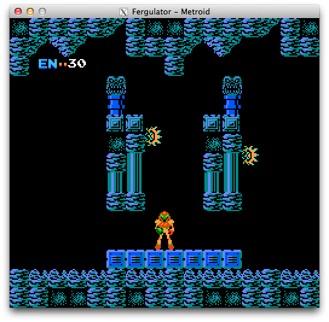
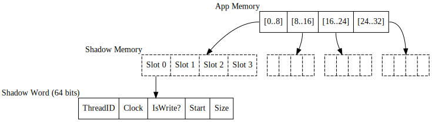

The Go Race Detector
11 Jun 2014
Robert Knight
Overview
- What is a data race and how can they happen in Go code?
- Using the race detector to find and fix races
- How the race detector works
Motivation
Motivation
- Go makes concurrency easy
// explicit concurrency using 'go' statement
go func() {
...
}
// implicit concurrency via standard library
timer.AfterFunc(5 * time.Seconds, func() {
...
})
- ... but also allows you to share mutable data between goroutines
- Therefore data races are possible
- These are often hard to debug
- Go's memory safety guarantees do not apply in presence of data races
What is a data race?
A condition where the timing or ordering of two memory accesses in a program
affects whether the outcome is correct or not.
Data Race conditions
Two memory accesses are involved in a data race if they:
- Target the same piece of memory
- Happen concurrently in two goroutines
- At least one of the accesses is a write
- Neither access happens before the other
value := 0
for i := 0; i < 1000000; i++ {
go func() {
value += 1
}()
}
fmt.Printf("%d\n", value)What does 'Happens Before' mean?
- If an operation is said to happen before another then the
result must reflect that, even if operations really performed in a
different order (eg. due to out-of-order execution by CPU).
- Term often used when discussing the memory model for a language.
eg. from the Go reference: "A send on a channel happens before the corresponding receive from that channel completes"
Data Races - A buggy example
A concurrent image processing program
func main() {
done := make(chan bool)
paths := os.Args[1:]
for _, path := range paths {
go func() {
fmt.Printf("Processing %s\n", path)
processImage(path)
done <- true
}()
}
for processed := 0; processed < len(paths); processed++ {
<-done
}
}
Data Races - A buggy example
go run simple.go a.png b.png c.png
Output:
Processing c.png
Processing c.png
Processing c.png
Avoiding Races
Follow Go best practices for communicating
- Use channels to share values between code that may run in different goroutines
- Many good articles on concurrency patterns at blog.golang.org/index
- Be familiar with the Go memory model
Go memory model
Provides details on what guarantees Go provides about the order in which events
happen when:
- Variables are read/written within the same or different goroutines
- Goroutines start and finish
- Values are sent or received on channels
- Mutexes are locked or unlocked
golang.org/ref/mem
Using the Race Detector
The Race Detector was introduced in Go 1.1. Available for 64bit Linux, Mac & Windows OSes.
- Use the
-race build option
go test -race net/http
go run -race app.go
go build -race path/to/package
- Run your app (or tests)
- The race detector will log details of races to console
A Simple Example - Race Detector Output
WARNING: DATA RACE
Read by goroutine 3:
main.func·001()
/home/robert/projects/talks/golang-race-detector/examples/simple.go:27 +0x99
Previous write by main goroutine:
main.main()
/home/robert/projects/talks/golang-race-detector/examples/simple.go:25 +0x153
Goroutine 3 (running) created at:
main.main()
/home/robert/projects/talks/golang-race-detector/examples/simple.go:30 +0x1e4
A Simple Example - Explained
path variable is captured by reference. Goroutines only see the value
it has by the time they start executing.
func main() {
done := make(chan bool)
paths := os.Args[1:]
for _, path := range paths {
go func() {
fmt.Printf("Processing %s\n", path)
processImage(path)
done <- true
}()
}
for processed := 0; processed < len(paths); processed++ {
<-done
}
}
A Simple Example - Fixed
func main() {
done := make(chan bool)
paths := os.Args[1:]
for _, path := range paths {
go func(path string) {
fmt.Printf("Processing %s\n", path)
processImage(path)
done <- true
}(path)
}
for processed := 0; processed < len(paths); processed++ {
<-done
}
}
Caveats
- Only finds races in running code.
- Therefore testing must exercise realistic workloads
- Performance overhead - CPU cost of runtime library calls (~2-10x) and additional memory usage (~5-10x)
- Only detects data races - These are not the only kind of race condition
How the Race Detector Works
Detecting Data Races
In order to detect data races, we need to monitor:
- Accesses to memory from different threads
- Operations that impose ordering on memory accesses - either directly (eg. functions in
sync/atomic) or indirectly (eg. primitives like mutexes, sending values over channels).
Several approaches we could take for this.
Approach A - Emulate the machine

- Emulate the system - intercept every memory access and function call
- Comprehensive, but slow
- Used by valgrind (more specifically, the helgrind and DRD tools)
Approach B - Rewrite the code
The race detector uses a combination of compile time instrumentation
and a runtime library.
At compile time, insert calls into the runtime library when "interesting events"
happen:
- Every memory read and write
- Function entrance/exit
Implementation in cmd/gc/racewalk.c
Runtime Components
- Uses the ThreadSanitizer library, originally developed for Chrome
- Runtime provides functions that update shadow memory whenever memory accesses occur
- Packages that provide concurrency primitives (eg. package sync) contain code to instrument operations that impose ordering on memory accesses, when the race detector is enabled
Memory Access Ordering - Acquire and Release
- Operations that guarantee a happens before relation between memory accesses come in several flavors. Two common ones are acquire and release.
- Acquire semantics - Applies to operations which read from memory. A read with acquire semantics happens before any read or write operation which follows it in 'program order' (ie. in the code).
- Release semantics - Applies to operations which write to memory. Any read or write operation which come before the write with release semantics in program order happen before the write.
Shadow Memory
Every 8-byte word of app memory is associated with N (currently == 4) shadow words.
Each shadow word describes a memory access:
- Which thread the access happened in
- Which sub-region of the 8-byte block the access applies to
- What " time " the access happened at
- Whether it was a read or write
Shadow Memory

Implementation - State Machine
Every time a memory access occurs:
- Create new shadow word to represent the current memory access
- Compare with the N existing shadow words for the same 8-byte block of memory to find races with earlier accesses.
- Replace one of the existing shadow words (one that happened before this access if possible)
Implementation - Race Detection
If, when comparing the new and existing shadow words, we find two memory accesses where:
- The memory regions accessed overlap
- The accesses happened in different threads
- At least one of the accesses is a write
- Neither access happened before the other
Houston, we have a race → Output a report
Summary
- Concurrency is easy in Go ☺
- ... so are race conditions ☹
- Prevention is better than cure: Share memory by communicating (use channels)
- Use the data race detector
Further Reading
Usage
Introducing the Go Race Detector (blog post)
ThreadSanitizer Go manual
Implementation
ThreadSanitizer algorithm overview
Primer on Acquire and Release Semantics (useful to understand what it means for one memory access to happen before another)
Notable Examples
Bugs in the standard library found by the race detector
Thank you